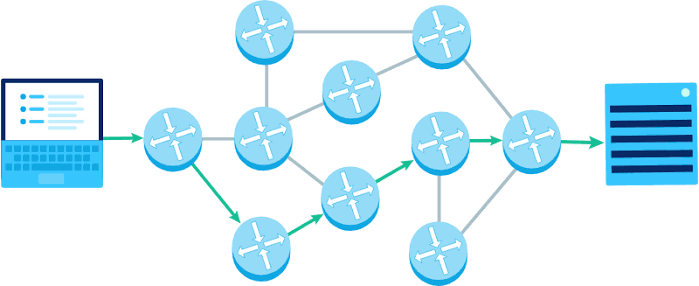

Data Traversal
Home
UDP|TCP
Forwarding&Routing
Router Structure

Routing
The actual moving of data froom source to destination
Traverses through the physical hardware
Forwarding
Routing is the process that assigns the direction data should take
Uses routing algorithms
Sources
Geeks-for-Geeks: Computer Networking Basics
CST311: Computer Networks Course Lecture Slides